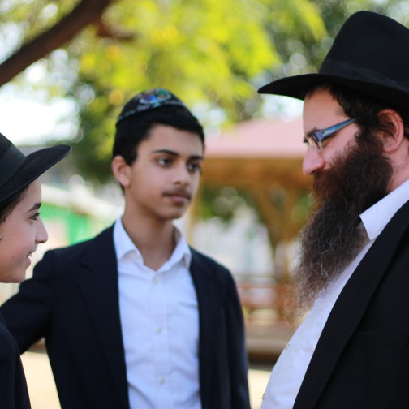

The Yeshiva Years Can and Should Be the Best Years of a Boy’s Life
The Aseres HaDibros (Ten Commandments) which appear twice in the Torah, once in this week’s Torah portion and once in the portion of VaEschanan, enable us to synthesize the intense G-dly revelation with the characteristics of human nature. * How do we train bachurim to love the study of Torah? What is the difference between someone who is a “Chassid” or is “Chassidic”? What is the difference between having a “mashpia” and “asei lecha rav”? And how are these questions related to the repetition of the Aseres HaDibros? * A fascinating conversation about the D’var Malchus of the week (sicha of Yisro 5752) with R’ Menachem Mendel Friedman, mashpia in Yeshivas Chabad in Petach Tikva.

R’ Menachem Mendel learned in his youth in Tomchei T’mimim in Kiryat Gat, and after his k’vutza year he joined the project of collecting and editing the s’farim D’var Malchus im Pianuchim (with all footnoted citations written out). Over the years since then, he has held a number of educational and rabbinic positions, including serving as the Rosh Kollel for the married students in Ramat Aviv. Upon the opening of the yeshiva in Petach Tikva for the school year of 5775/6, under the leadership of the veteran educator Rav Yitzchok Axelrod, he was appointed to be a maggid shiur and mashpia in the yeshiva.
* * *
When I asked R’ Friedman to point out what he sees as the novel points of the weekly D’var Malchus of Parshas Yisro, he chose, like any good Jew, to open with a question of his own:
What is the difference between someone who is a Chassid and someone who is Chassidic?
A Chassid is a Jew who is on a high level in his service of Hashem. He lives up to the precepts and definitions cited in Nigleh and Chassidus in terms of the defining essence of what makes a Chassid. In halacha, a Chassid is a Jew that conducts himself beyond the letter of the law; in Chassidus it is brought that a Chassid is one who changes the innate nature of his character traits. Or as it is delineated in the Hayom Yom (21 Adar I): A “Chassid” refers to one who recognizes his own essence-character and his standing in the knowledge and study of Torah, as well as his situation in the observance of mitzvos. He knows what he lacks, and he is concerned and takes pains to fill that void. He is diligent in obedience in the manner of “accepting the yoke.” In short, clearly a lofty level.
In contrast, the title Chassidic can be applied to many Jews who do not live up to all of the attributes and definitions of a Chassid. That is why we can read stories about the “Chassidic wagon driver,” the “Chassidic tailor,” or even the more general term of a “Chassidic balabus.” Many of those that are referred to as such do not rise to the awesome level of the Chassid. It would seem that the small suffix added to the word Chassid is there to lessen the degree of piety of those that are called Chassidic. According to this, the title Chassidic is akin to a dilution of “Chassid.”
However, when learning the D’var Malchus of Parshas Yisro, we come to understand the advantage and quality that there is specifically in the appellation Chassidic:
The Rebbe asks why the Aseres HaDibros appear twice in the Torah, once in our portion and a second time in VaEschanan. He explains, that in order to achieve completion in the matter of “a dwelling in the lowly realms,” it is necessary that there be the representation of two extremes simultaneously. On the one hand, the dwelling needs to house “The Essence and Being,” and on the other hand, the dwelling needs to be specifically within the reality of the lowly realms. Similarly, the study of Torah needs to integrate two extremes: to sense that this is literally “The Word of G-d,” while concurrently toiling with human intellect and connecting it to one’s own existence.
In our portion, the Aseres HaDibros are written as they were said by Hashem, “And Elokim spoke all of these words saying.” This an authentic divine communication, which we don’t tamper with and we don’t try to explain. Whereas in VaEschanan, the Aseres HaDibros are written as they were taught and repeated by Moshe Rabbeinu, the “connecting intermediary,” who himself exists as a soul in a body. There the emphasis is on the recipients, in that we need to receive it with our intellect so that the Torah becomes a part of who we are. We are supposed to uncover novel insights in Torah, we are to decide on halachos in Torah, and even look to see how the Torah resolves the problems that we face in life.
Because the Aseres HaDibros appear twice in the Torah, we are empowered to combine both qualities, the loftiest possible revelation of The Essence, along with the ability to receive and contain the revelation.
Now, let’s get back to the distinction between Chassid and Chassidic. The Chassid is like the Aseres HaDibros in our portion, someone lofty who has no connection with the physical and materialistic aspects of life. Whereas someone who is Chassidic is like the Aseres HaDibros in VaEschanan, spirituality as it dressed up in the clothing of this world, and so he can be a “Chassidic wagon driver.”
In the list of demands to be worthy of the title Chassid, to be a wagon driver is obviously not on the list. However, someone who is Chassidic, and brings Chassidus into every aspect of his life, can just as well be a “Chassidic wagon driver.” And even as he travels the roads, it will be obvious that this is no ordinary coachman, but a “Chassidic wagon driver,” because to him, Chassidus has become part of his very existence.
A few months back, I encountered an interesting demonstration of this distinction. Due to a wound on my foot, I had difficulty walking. After the typical treatments were not effective, I began doing the rounds of the specialists, until I got to the office of a top doctor who diagnosed the exact problem. Despite having an exact diagnosis, the pains did not go away – until I went to a physiotherapist, who sat with me for quite some time and questioned me about every detail of my daily schedule, pinpointing all of the areas of weakness that put stress on the foot, and after all of that he assigned me exercises that were actually very helpful.
Suddenly, I got it. Although the physiotherapist is a nobody compared to the doctor, in order to actually effectuate the change in everyday life, it is not enough to meet with the doctor, who just hands down his conclusions in a “top-down” fashion. It is necessary to sit with the physiotherapist, who relates to the down-to-earth reality and checks it out from a “bottom-up” perspective, and then what the doctor said will produce actual results even in the physical foot.
The novel insight of the Rebbe in the D’var Malchus is that Moshe Rabbeinu, by repeating the Aseres HaDibros, made it possible for the Jewish people, even as they are in their physical and material existence down below, to receive the lofty G-dly revelation of the first Dibros, and to assimilate the messages whilst being fully present in the “lowly realms.”
You serve as a mashpia in Yeshivas Chabad in Petach Tikva. This is a yeshiva that just opened last year with a unique approach, more relaxed but without lowering the Chassidic standards. Clearly there was a positive response, since you started this year with 70 bachurim. How do you achieve this integration between the world of the bachurim and ways and practices of Chassidus?
In the sicha of Shoftim 5748, the Rebbe points out an amazing thing, namely, that there is no mitzva in the Torah to train children in the performance of mitzvos, which raises the obvious question: since chinuch is the entire basis of the Torah and mitzvos that he will keep after becoming bar mitzva, how is it possible that there is no mitzva in the Torah to train children? The Rebbe explains that the performance of mitzvos by children is higher than the category of a mitzva. It is necessary to train them to want to fulfill the mitzvos not because of the command of the King, but that it should come from themselves (the desire to fulfill the Will of Hashem).
In the course of the sicha, the Rebbe applies this explanation to the month of Elul, which is sort of like a period of “chinuch” for the upcoming year, and it too has no special laws and mitzvos. The reason is that those things associated with Elul need to come from the Jew himself. The Rebbe draws an amazing conclusion, that when a Jew is so infused with G-dly desire, higher than a command, he has the ability to intuit the Divine Will even in matters where there is no explicit command. And when a person is in such a state, he reaches the highest level of joy due to the G-dly revelation that shines forth in the month of Elul, and even greater than the joy of Purim, since on Purim we rejoice because of a command, as opposed to the month of Elul which is higher than any command.
These two approaches to the performance of mitzvos, because of the command or from a place that is above any command, represent two approaches to the period of study in yeshiva:
There are those who are of the mind that the period of learning in yeshiva is sort of like a training period, to teach the bachurim how to learn and how to be a Chassidic Jew. With this approach, all of life in yeshiva is hechsher mitzva (preparation for a mitzva). There are obligations, and in yeshiva we teach a bachur how to meet those obligations. With this approach, the student feels that the years of study in yeshiva are difficult years, which he needs to pass through without messing up.
However, there is another approach, namely, that it is our job to infuse the students with the sense that Torah is their life, such that they will want, of their own accord, to fulfill the Torah and the mitzvos. When one educates in such a manner, the period of learning in yeshiva is the sweetest period that there is in life.
How does one apply these concepts in actual practice?
In our yeshiva, we see as the top priority that the bachurim should love what they are doing. Therefore, we devote a lot of time to open conversations with the students.
When a bachur is having difficulty living up to the demands of the system, we won’t say to him: these are the rules of the yeshiva, and you must adjust accordingly. Of course, in general that is the way it is, but we will show sensitivity because we are absolutely interested in the problems that the student is contending with, and we want to hear what is bothering him and try to work together to arrive at a solution.
Along the lines of what we spoke about earlier, the integration of the “Dweller” and the “dwelling,” we don’t tell a bachur – this is the dwelling and you need to make do with what is. Rather, we try as much as we can to match up the dweller and the dwelling. Our goal is that there should be a complete alignment between the bachur and the yeshiva framework, so that the yeshiva will be the perfect place for him.
That is our general approach, and we put it into practice on a daily basis through personal conversations and open discussions at farbrengens. Sitting with the bachurim on Friday nights for “oneg Shabbos” allows for informal conversations which are highly effective. We also take the bachurim on outings from time to time and use the time together to schmooze with them.
The main point that we speak about is that the life of Torah and mitzvos, studying the teachings and fulfilling the directives of the Rebbe, these are the essence of our true lives. When this message really penetrates, the period of life in yeshiva turns into the sweetest period of their lives, because the bachur feels that he is really living life.
In regard to this point, it is important to mention the special work of the “bachurim-shluchim” in the yeshiva. If one could say such a thing, they serve as the bridge between the “first tablets” and the “second tablets.” This is since, on the one hand, they are connected to the administration and seem as if they are coming from “above,” while at the same time they are still bachurim themselves who are part of the world “below,” and therefore have the ability to have a unique influence on the students of the yeshiva in specifically those points that we spoke about.
The Rebbe wants us to all be living with the Geula. How do we get to the state where we feel that Geula is our true life?
When the Rebbe spoke about the need to be “living Geula,” the emphasis is on the “living” part. Not just to learn. Although the Rebbe also spoke about the need to learn the subjects pertaining to Geula, that is primarily as a means to an end, which is to be “living Geula.”
When a Jew “lives” galus/exile and only “studies” Geula, he is looking at the Geula through binoculars, at a distance. He is here, in exile, and the Geula is out there far far away from him. He could even be proficient in all the particulars of Geula, but as something that is somewhere out there on the horizon.
The Rebbe wants us to “live” Geula. The most powerful feeling that a person experiences is the feeling of being alive. This feeling has no limitations. When a person feels that he is alive, he is not feeling how his life began on a certain date (his date of birth), and will end on a certain date (after 120 years, in the current galus system). He simply feels his aliveness in the here and now, as if he was and will always be alive.
That is what the Rebbe wants of us, to “live” Geula:
By our natures, we are galus people. We were born in galus, we have become accustomed to galus, and we “live” galus. From the perspective of our natural inclinations, galus was here, is here, and will continue to be here. Learning Torah on the subject of Geula has the power to bring us to a state in which Geula becomes our “life.” When a person attains that feeling, the boundaries between past, present and future, become blurred, and it is possible to even now, in the present, feel the future, the Geula.
The story is told that someone once asked the Rebbetzin what was the best moment in her life, and she answered, that it was the current moment. What does that mean? If we look at the Torah and the mitzvos as hard labor, which will ultimately lead to “great wealth,” then we are living with a sense of enslavement and exile. But when we understand that the Torah and mitzvos are G-dly revelations, and that this is what the “Days of Moshiach” are all about, we understand that even now, when we fulfill the mitzvos, we are receiving the G-dly revelation of the Days of Moshiach. This is like those people who are harvesting grapes in their vineyards and have the ability to eat as they pick; they get to experience the rewards as they work.
There were times during the period of galus that they did not have the ability to experience this feeling, but as we get closer to Geula, it is possible to get a taste of the Geula, and in our time we can actually feel the Geula, which would explain why the Rebbe did not make the same demand of the Chassidim back in the early years. Only in the later years, as we get that much closer to the Geula, it is our ability to already get a taste of the Geula-reality.
Avrohom Rainitz. "The Yeshiva Years Can and Should Be the Best Years of a Boy’s Life." Beis Moshiach, no. 1151 (January 22, 2019).